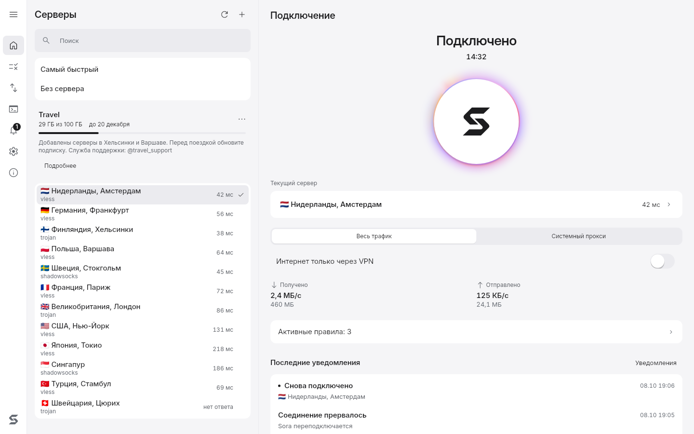

Вставь подписку и нажми одну кнопку
Sora подключает VLESS, Trojan, Shadowsocks и другие протоколы через sing-box, Xray или mihomo и сама выбирает ядро под сервер. Для Windows и Linux, с открытым кодом.

Что внутри
Подписки
Ссылка от провайдера, обычные ссылки на серверы и JSON-конфиги Xray. Sora обновляет подписку сама и показывает остаток трафика, срок и объявления провайдера.
Весь трафик или только браузер
Режим TUN заворачивает в VPN все программы, системный прокси трогает только те, что его слушают. Переключение в один клик.
Интернет только через VPN
Если соединение оборвалось, трафик не уходит мимо туннеля. На Linux это nftables, на Windows фильтры WFP.
Свои правила
Сайты, адреса и программы напрямую или через VPN. Готовые маршруты для России, Ирана и Китая, блокировка рекламы.
Самый быстрый сервер
Sora меряет задержку, выбирает быстрый сервер и переходит на запасной, если основной перестал отвечать.
Не мешает работать
Живёт в трее, запускается вместе с системой, переподключается после сна и смены сети. Ссылки sora:// открывают добавление подписки.
Установка
curl -fsSL https://github.com/levvs-one/sora-client/releases/latest/download/install.sh | shDebian, Ubuntu, Fedora, openSUSE и Arch. Скрипт сверяет файлы с SHA256SUMS и ставит пакеты приложения и службы.
irm https://github.com/levvs-one/sora-client/releases/latest/download/install.ps1 | iexWindows 10 1809 и новее, Windows 11. Команда для PowerShell; можно и скачать установщик.